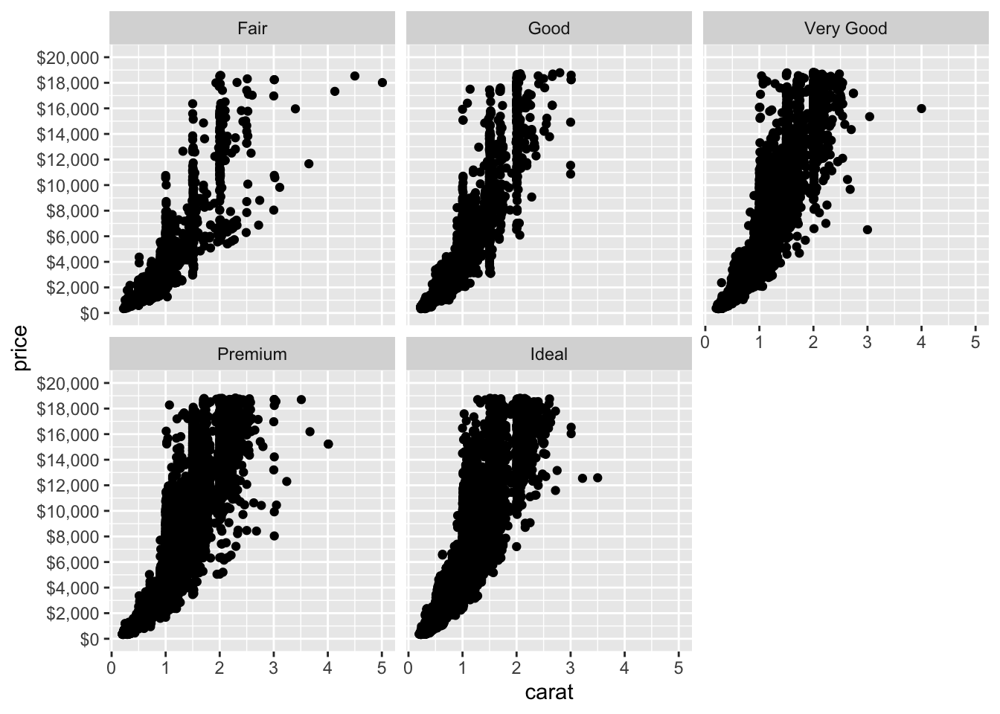

ggplot(data = diamonds)

ggplot2 packageThe ggplot2 package is one of the most-used packages in R for data visualization. Created by Hadley Wickham, the package is based on Wilkinson’s grammar of graphics, with some modifications to be more suited to the R environment.
With it, we can iteratively update a plot, changing a single feature at a time.
Most of this information was ported from the ggplot2 vignette.

The three key components of a ggplot2 plot are data, aesthetic mappings, and layers.
Of course if we are creating a data visualization, we must have data. The data works best with the ggplot2 package if it is in the tidy format.
The first step of creating a plot is the ggplot() function. We often use the data as the first argument in this function.
ggplot(data = diamonds)
By itself, the function only produces a blank plot.
Each ggplot plot should have a set of aesthetic mappings that map variables in the data to visual properties, By mapping do not think land map - mapping refers to aligning data to visual properties in graphs.
For example, we might want to map our x axis to carat and our y axis to price from the diamonds data frame.
ggplot(data = diamonds, mapping = aes(x = carat, y = price))
Note that the plot still does not include observation-level data, but the x and y axes are defined. To add data related to observations in a data frame, we must choose a layer to add on to our data.
The columns of our data frame that we want to map to aesthetic features in the aes() function in the mapping argumnet.
<br.
The layers take the mapped data and display it in a way that humans can understand as a representation of dta. We can think of a layer as determining the geometry by which data are displayed, where a piece of data is displaed, and what kinds of statistical transformations are needed to display the data.
ggplot(data = diamonds, mapping = aes(x = carat, y = price)) +
geom_point() + # add point layer
geom_smooth(formula = y ~ x, method = "lm")
Note the + between functions within a ggplot() call. This is different than a |>, in that the result of the left-hand side is not added as the first argument on the right-hand side. Instead, we use it to add layers, scales, facets, coordaintes, and themes for ggplot objects.
We will most often be using the geom_*() functions as our layers in this course. Type geom_ into the consoler (after loading tidyverse) and hover over it to see some exmples of geom_*() functions.
Scales are responsible for updating the limits of a plot, setting the breaks, formatting the labels, and possibly applying a transformation.
To use scales, one can use one of the scale functions that are patterned as scale_<aesthetic>_type() functions where <aesthetic> is one of the pairings mde in the mapping part of a plot. For example, to change the y-axis of the graph, we might use the scale_y_continuous() function.
ggplot(data = diamonds, mapping = aes(x = carat, y = price)) +
geom_point() + #add point layer
scale_y_continuous(limits = c(0, 20000), # set y axis limits
breaks = seq(0, 20000, 2000), # set tic marks
labels = scales::dollar # change the format of the labels to show $
) +
scale_color_hue() # add color theme
Facets can creat multiple plots based on categories or subsets of data. We can quickly split data up to look at relationships within a category or other kinds of patterns.
Facets must be given as a formula, designated by the ~ operator in R.
Let’s plot the same plot from before except using a facet instead of examining cut by color.
ggplot(data = diamonds, mapping = aes(x = carat, y = price)) +
geom_point() + #add point layer
scale_y_continuous(limits = c(0, 20000), # set y axis limits
breaks = seq(0, 20000, 2000), # set tic marks
labels = scales::dollar # change the format of the labels to show $
) +
facet_wrap(~cut) # add facet by the cut category
Coordinates are how the plot interprets position aesthetics. Typically Cartesian coordinates are used, which is what we use for our standard graphs. However, there are other coordinate systems, which we will discuss in more detail next lesson when we start creating geographic maps.
We can use coordinates to flip our x and y axes for the graph. The coord_flip() function flips Cartesian coordinates so that horizontal becomes vertical and vertical, horizontal.
I like this especially for bar charts.
ggplot(data = diamonds, mapping = aes(x = cut)) +
geom_bar() +
scale_y_continuous(limits = c(0, 20000), # set y axis limits
breaks = seq(0, 20000, 2000), # set tic marks
labels = scales::dollar # change the format of the labels to show $
) +
coord_flip()Warning: Removed 1 row containing missing values or values outside the scale range
(`geom_bar()`).
Themes control aspects about visuals for the plot that do not have to do with the data. We can use the themes for a variety of attributes, including location of legends, backbground color for the plot, axes attributes, etc.
We modify theme attributes with the theme() function.
ggplot(data = diamonds, mapping = aes(x = cut)) +
geom_bar() +
scale_y_continuous(limits = c(0, 20000), # set y axis limits
breaks = seq(0, 20000, 2000), # set tic marks
labels = scales::dollar # change the format of the labels to show $
) +
coord_flip() +
theme(panel.background = element_rect(fill = "white"), # change background color to white
panel.grid.major = element_blank(), # remove grid lines
panel.grid.minor = element_blank()) # remove grid linesWarning: Removed 1 row containing missing values or values outside the scale range
(`geom_bar()`).
There are also a number of theme_*() functions that essentially have modified many of these options about these attributes already and bundled them into one function.
ggplot(data = diamonds, mapping = aes(x = cut)) +
geom_bar() +
scale_y_continuous(limits = c(0, 20000), # set y axis limits
breaks = seq(0, 20000, 2000), # set tic marks
labels = scales::dollar # change the format of the labels to show $
) +
coord_flip() + # flip the x and y axis
theme_minimal() # use a minimal themeWarning: Removed 1 row containing missing values or values outside the scale range
(`geom_bar()`).
I am in the process of developing an fhfatheme package for creating visuals with consistent theming across FHFA products created in R. I’ll follow up with everyone when that is released.